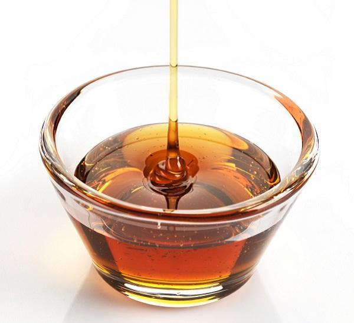

Caramel syrup
Add the sugar and water to the pan you will be baking the flan in, or use an aluminum syrup pan (stainless steel works too).
Place over medium low heat. When sugar starts to melt, stir gently and occasionally until the syrup starts to turn to a light-clear brown, remove immediately. Do not let it burn.
Directions
Preheat the oven to 180°C/375°F.
Put the sweetened condensed milk, whole milk, and eggs into a blender.
Mix well and put aside to rest while making the caramel syrup.
Place the baking pan with caramel syrup into a large baking tray.
Pour in the mixture of sweetened condensed milk, whole milk, and eggs.
Set the whole assembly in the oven and then pour enough hot water into the large baking dish to come about halfway up the side of the pan with the flan.
Bake for approximately 40 minutes, or until brown on the top and a toothpick comes out clean.
Leave to cool until room temperature. Turn the flan onto a plate and put it into the fridge to cool for at least 1 hour